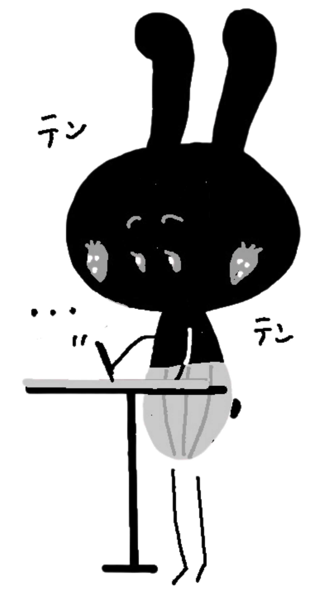

点描画の描き方 01
このページでは、点描画の練習に使えるA4ぬりえPDFをダウンロードできます。
ご自宅で印刷して、点をひとつずつ打ちながら楽しんでください。
くろうさ先生より
はじめは、きれいに仕上げようとしすぎなくて大丈夫です。
点を打つ時間そのものを、ゆっくり楽しんでください。
はじめは、きれいに仕上げようとしすぎなくて大丈夫です。
点を打つ時間そのものを、ゆっくり楽しんでください。
ぬりえPDF
ご利用について
PDFは、個人で楽しむ範囲でご利用ください。
完成した作品は、SNSに投稿していただいて大丈夫です。
その際は、
「セキマコトの点描画入門書を参考にしました」
と添えていただけると嬉しいです。
※PDFデータの再配布・販売、自作発言はご遠慮ください。